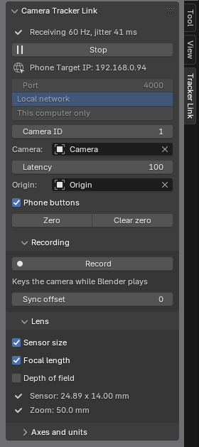
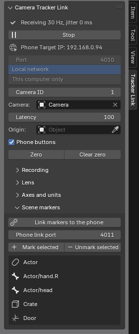

Before you start
You need Blender 4.2 or newer, an Android phone running Camera Motion Studio, and a shared local network. Camera Tracker Link is currently a beta add-on; contact Tech Story for the installable zip. There is no public download linked from this guide.
Use matching current app and add-on builds: the current camera message includes both local and world poses, and an older receiver cannot read it. The add-on is plain Python with no extra dependencies. It is designed for Windows, macOS, and Linux; development and testing so far have been on Windows with Blender 4.2 and 5.2.
Install Camera Tracker Link
- In Blender, open Edit > Preferences > Get Extensions.
- Open the menu in the top right, choose Install from Disk, and select the add-on zip.
- Enable Camera Tracker Link after installing the extension. It listens on the local network; allow Blender through the computer firewall if needed.
Set up the phone stream
In the setup wizard, choose Blender. It selects OSC and unicast, pre-fills port 4000, and keeps position units in metres. Enter the computer's local address as Target IP. The wizard also enables the OBS and NDI return-viewfinder options.
You can verify or change these values later under Settings > Stream: Protocol = OSC, Target IP = the computer running Blender, Port = the add-on's listening port, and Camera ID = the ID selected in Blender. The default Camera ID is 1.
Connect the camera in Blender
- Open a 3D viewport, press N, and select the Tracker Link tab. Its Phone Target IP is the address to enter on the phone.
- Choose an unparented camera to drive (or leave it empty for the scene camera). Set the add-on's Port and Camera ID to match the phone;
-1accepts any camera ID. - Press Start in Blender, then start streaming on the phone. The panel shows incoming pose rate and network jitter.
- Place an Origin object where the shot should begin, hold the phone at its starting pose, and press Zero. Move the Origin later to re-place the shot.

Calibrate the lens
In the phone's Settings > Lens, calibrate zoom, focus, and iris. Camera Tracker Link sets Blender's sensor size from the app; calibrated zoom drives focal length, while calibrated focus and iris can drive depth of field. Uncalibrated channels are ignored. Enable Depth of field in the add-on Lens panel to drive focus and iris; this option starts off. If a Blender Focus Object is set, it takes precedence over numeric focus distance.
To see depth of field, look through the camera in Material Preview or Rendered mode, or enable Depth of Field in Solid viewport shading.
Record a timed take
Press Record in Tracker Link, or use the phone's OSC record button with Pro. Blender plays its timeline and keys the camera's position, rotation, and any driven lens values on each frame. Stop recording manually or let the playback range end.
Every phone pose includes its sensor capture time. The add-on places samples on that timeline and displays them with a short adjustable Latency (60 ms by default) to hide Wi-Fi jitter. Recording uses those capture times to space keys evenly rather than keying packets as they happen to arrive. Sync offset can shift a take to align it with delayed video or audio.

Record locally on the phone and export afterwards. This avoids missing live network packets. The Blender add-on's live recording is useful for immediate editing in the scene, while phone-side recording preserves the source take.
While streaming, Tracker Link drives the camera transform every update; existing camera animation can fight the live view. Recording over frames that already contain keys replaces those keys.
For FBX, calibrate the lens before recording and use the take's available As streamed export options to preserve the operated rig/look-at result. Effects and smoothing options can change the exported movement. With app Space scale 1, add-on Position scale 1, FBX Position scale 1 and Blender Metric Unit Scale 1 / import Scale 1, use the documented unit setup. New FBX exports carry centimetre coordinates; re-export older files before retaining a compensating import scale. FBX export requires Pro and an app version that supports it.
Send scene markers to the phone
Camera Tracker Link can send marked Blender objects, collections, and armature bones back to the phone as a read-only Live scene. The operator can use them for aiming and focus while the markers follow Blender's animation.
- On the phone, enable Settings > Stream > Scene link > Accept a marker link.
- In Blender's Scene markers panel, select objects and choose Mark selected. Bone markers can be added from an armature's Tracker marker panel.
- Start the OSC receiver, choose Link markers to the phone, then approve the connection on the phone.

Use Default axis mapping and check placement before relying on it in a shot.
Ride a scene reference
In Scene markers, give a marker Ref and use a Point or Base anchor. Choose position follow or position plus heading. A marker can hold Focus, Aim, and Ref together; each role still belongs to one marker.
Reference-local camera is enabled by default; restart the receiver after changing it. For supported references, Blender interpolates the local camera motion and places it against the current scene reference. Hold, replay, stale links and unsupported reference operations use the enclosed world pose. Disabling the option also uses that world pose.
Receiver recordings always key the phone world camera. A live reference preview and the recorded take can therefore differ if the reference was delayed. Marker animation is not recorded with the phone take, and reference changes can cause a correction. This workflow uses an unparented camera; it does not implement a parented recording rig.
Connection checks
If nothing arrives, compare the add-on's Phone Target IP with the app's Target IP, check the matching UDP port and Camera ID, and confirm the phone is streaming OSC rather than FreeD. The panel distinguishes a wrong ID, a stopped stream, and no packets. Allow Blender through the computer's firewall on the network used by the phone.